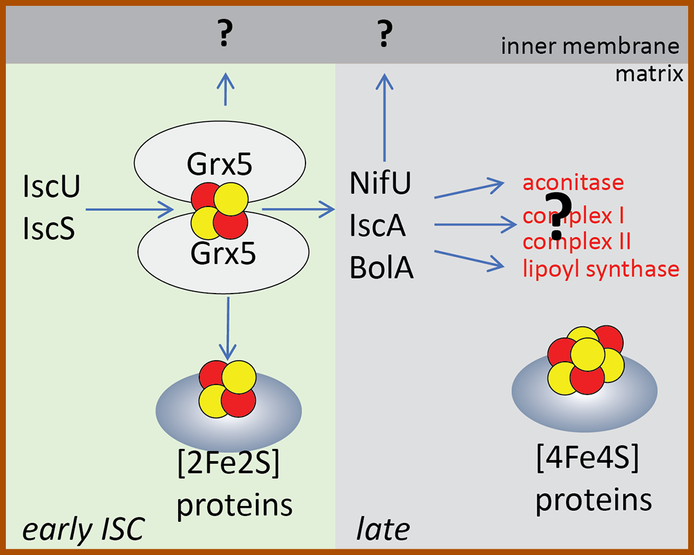
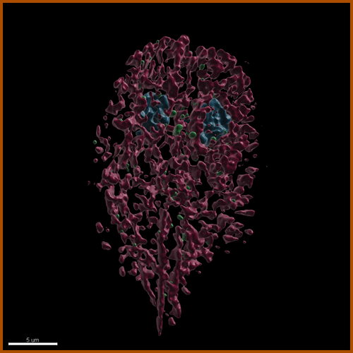

Giardia is an anaerobic protist greatly adapted to the life in the gut. It attaches to the enterocytes via the adhesive disc and among many other peculiar features, it modified its mitochondria so they no more look like mitochondria. These organelles called mitosomes represent one of the simplest mitochondria. They lack mitochondrial genome, respiration and ATP synthesis and mediate only single metabolic role of the biosynthesis of iron-sulfur (FeS) clusters. While they reflect extreme evolutionary adaptation, Giardia mitosomes are also great experimental model for core mitochondrial processes such as (i) the synthesis and the export of FeS clusters, the organelle division and inheritence and import of cytosolic ATP to support mitosomal functions minimalist protein import machinery.
Our Research
We are interested in the evolutionary cell biology, specifically in the organelles, processes and structures which are often unique among eukaryotes but represent key evolutionary innovations/adaptations. Currently, we study three unicellular organisms in which we examine novel aspects of the mitochondrial protein transport, mitochondrial dynamics and architecture. We also endeavour to understand pathogen specific processes such as the formation of the infectious cysts of intestinal parasites and the structure and biogenesis of polar tube of microsporidia - a proteinaceous nanotube through which these eukaryotes invade other eukaryotic cell.
The minimalist mitochondrial organelles of Giardia intestinalis
Role of Mlf1 transcription factor in the quality control of mitosome and endoplasmic reticulum (ER) membranes.
Myeloid leukemia factor 1 (Mlf1) was discovered as an oncoprotein which plays role in phenotypic determination of hemopoetic cells. Surprisingly, there is Mlf1 homologue in Giardia, which can be found at various cellular membranes. We study the general role of the protein and its specific function in Giardia.
